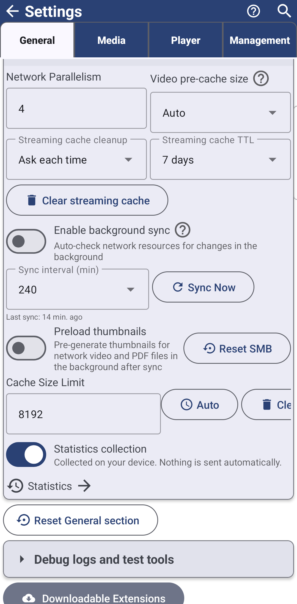

Фонова синхронізація - Standard, noLegal, Photos, Legacy та VR, не Lite, не FOSS. Пріоритет відтворення відео для мініатюр - лише Standard.
Підтримання актуальності мережевих папок
Увімкніть фоновий розклад, щоб мережеві та хмарні папки самі лишалися актуальними, заздалегідь готуйте їхні мініатюри, і дайте відео з мережі, що відтворюється, повний канал для себе, поки прев'ю чекають своєї черги.
Чому вам це сподобається
Хтось інший постійно додає фотографії в спільну папку на домашньому NAS, і набагато приємніше бачити вже актуальний список файлів при відкритті, ніж щоразу тягнути екран, щоб оновити його вручну. FastMediaSorter вміє сам перевіряти ваші мережеві та хмарні ресурси на зміни за розкладом, який ви задаєте, і готувати мініатюри у фоні заздалегідь - тож відкриття папки відчувається миттєвим.
- FastMediaSorter у редакції Standard, noLegal, Photos, Legacy або VR для фонової синхронізації - не Lite, не FOSS. Див. Сім редакцій.
- Хоча б одна вже додана мережева папка чи хмарне сховище - див. Додавання мережевих папок і хмарних сховищ як джерел.
Дозвольте застосунку перевіряти зміни самостійно
Відкрийте Налаштування, вкладку Загальні, і знайдіть Фонова синхронізація, мережа й кеш. Увімкніть Увімкнути фонову синхронізацію - «Автоматично перевіряти мережеві ресурси на зміни файлів у фоновому режимі» - і встановіть Інтервал синхронізації (хв) на те, як часто вона має запускатися.
Хочете зробити це прямо зараз, не чекаючи? Натисніть Синхронізувати зараз. Рядок показує «Синхронізація..», поки триває робота, потім щось на кшталт «Успішно синхронізовано 5 ресурсів» після завершення, або «Не вдалося завершити синхронізацію. Спробуйте ще раз.», якщо ні. Нижче застосунок завжди показує, коли востаннє впорався з цим - «Остання синхронізація: » або «Ніколи не синхронізувалося» першого разу.

Готуйте мініатюри ще до відкриття папки
У тому самому розділі Попереднє завантаження мініатюр - «Фонова генерація мініатюр для мережевих відео та PDF після синхронізації» - готує прев'ю одразу після кожної синхронізації, а не лише коли ви гортаєте до файлу. Якщо хочете, щоб це відбувалося тільки через Wi-Fi, увімкніть ще й Лише через Wi-Fi, щоб застосунок ніколи мовчки не витрачав мобільний трафік на прев'ю, які ви ще не просили побачити.
Налаштування, розділ фонової синхронізації, мережі й кешу, обидва перемикачі увімкнені.
Відео з мережі, що відтворюється, завжди отримує канал
*Редакція Standard.* Поки відео з мережевої папки відтворюється, застосунок призупиняє фонове завантаження прев'ю для сусідніх файлів, тож відео отримує з'єднання одноосібно замість поділу з десятком мініатюр одразу. Щойно відтворення завершується, завантаження прев'ю саме відновлюється, і призупинені прев'ю довантажуються коректно, а не застряють, ніби сталася помилка.
Відео з ресурсу SMB відтворюється в плеєрі, елементи керування видно.
Що ви отримаєте
Мережеві та хмарні папки самі лишаються актуальними за обраним вами розкладом, їхні мініатюри часто вже готові ще до того, як ви їх відкриєте, а відео з мережі, що відтворюється, ніколи не бореться за канал із фоновим завантаженням прев'ю.
Поради та усунення несправностей
- Цікаво, як застосунок узагалі тримає мережеві папки швидкими? Додавання мережевих папок і хмарних сховищ як джерел пояснює кеші списку файлів і мініатюр, які живить ця синхронізація.
- Кеш потокового відтворення - окреме налаштування. Те, як довго відтворене відео лишається готовим для офлайн-продовження, описано на тій самій оглядовій сторінці, а не тут.
- Підключаєте самі папки? Див. Підключення спільних ресурсів SMB/Windows і Підключення серверів SFTP та FTP.